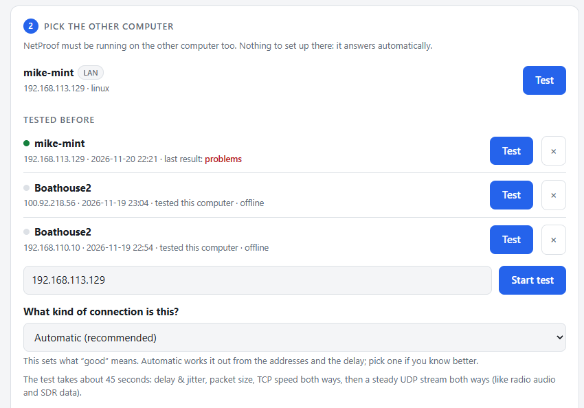

What it does
Run NetProof on both ends of the link you care about: the shack PC and the operating laptop, the radio PC and the remote site over a VPN, or two computers on your LAN. Either one presses Test; the other answers by itself. There is no client or server to choose.
Plain-language verdict
Results are grouped as You will notice, You may notice and Good to know, each saying what you would hear or feel first and the numbers second.
How to fix it
Every problem you would notice comes with a checklist: cables, switches, duplex, Wi-Fi, bufferbloat, VPN relays, MTU and firewalls.
Tests like radio traffic
A steady UDP stream both ways, like remote audio and IQ data, shows loss, jitter and out-of-order packets that TCP speed tests hide.
Finds the other computer
On the LAN by broadcast, and on Tailscale by asking Tailscale which peers run NetProof. Names and MagicDNS names work too.
Speed graph
Speed in each direction and the UDP streams over the whole test, kept with the results so dips and drop-outs stay visible.
Both screens show the result
The computer that was tested shows the same report, so the person at the far end sees it too.
Ask an AI
A ready-made prompt holding the whole report, to paste into ChatGPT, Claude, Gemini or Copilot for a conversation about your setup.
Keeps itself up to date
Signed updates from GitHub. A tester can update the far end too, before a test or with one click.

What it measures
About 45 seconds in total:
| Phase | Time | How |
|---|---|---|
| Delay, jitter, loss | 6 s | 300 small UDP probes (falls back to TCP if UDP is blocked) |
| Packet size (MTU) | ~1 s | Largest UDP packet that crosses in one piece, exact to the byte, and whether packets that must be split still arrive |
| Download | 10 s | 4 parallel TCP streams, far end to this end |
| Upload | 10 s | The same, the other way, measured at the receiving end |
| Busy delay | during both | 10 probes a second while the link is full (bufferbloat) |
| UDP stream in and out | 8 s each | A steady stream of 1200-byte UDP packets at a fixed rate, like radio audio, panadapter and IQ data: loss, one-way jitter, out-of-order packets, delivered rate |
The UDP stream runs at 100 Mb/s on a gigabit LAN, 30 Mb/s on 100 Mb/s or Wi-Fi and 10 Mb/s over a VPN, and never above 70% of the TCP speed just measured, so a slow link is tested for loss rather than simply overrun.
How results are judged
NetProof only calls something out when a person would actually hear or feel it: clicks and dropouts in audio, laggy remote control, CW and push-to-talk timing, slow file copies.
| Healthy 100 Mb/s LAN | Healthy 1 Gb/s LAN | Healthy VPN | You may notice | You will notice | |
|---|---|---|---|---|---|
| Speed each way | 90 to 95 Mb/s | 900 to 945 Mb/s | depends on both internet links | below 80 / 700 / 10 Mb/s | below 40 / 300 / 3 Mb/s |
| Delay (round trip) | under 1 ms | under 1 ms | 10 to 40 ms | above 50 ms | above 150 ms |
| Jitter | under 1 ms | under 1 ms | under 3 ms | above 5 ms | above 15 ms |
| Stream loss | 0 % | 0 % | 0 % | above 0.05 % | above 0.5 % |
| Extra delay when busy | under 20 ms | under 10 ms | under 30 ms | above 50 ms | above 150 ms |
| Largest packet (MTU) | 1500 | 1500 | 1280 to 1420 | below 1280 |
A wired link never reaches its label speed: about 6% goes to Ethernet, IP and TCP headers. Leave the connection type on Automatic and NetProof works out whether it is a gigabit LAN, a 100 Mb/s LAN, Wi-Fi or a VPN from the adapters, Tailscale addresses, subnets and the delay. A gigabit PC paired with one stuck at 100 Mb/s is judged as gigabit, with the slow end named as the problem.
Download
From the latest release:
| File | For |
|---|---|
| netproof.exe | Windows 10 and 11 (most PCs) |
| netproof-windows-arm64.exe | Windows on ARM |
| NetProof-mac.zip | Mac, Apple Silicon or Intel (macOS 11 or newer) |
| netproof-linux-amd64 | Debian, Ubuntu or other Linux on a PC |
| netproof-linux-arm64 | Raspberry Pi OS 64-bit (Pi 3, 4, 5) or other ARM Linux |
Windows may warn that the program is from an unknown publisher, because it is not code-signed. Choose More info → Run anyway.
Getting started
- Run NetProof on both computers. A browser page opens by itself.
- On one of them, click Test next to the other computer's name. If it is not listed (VPN, Tailscale, another subnet), type its address or name and click Start test.
- Wait about 45 seconds. Both screens show the verdict and, if needed, a "How to fix it" checklist.
New to it? Click Practice run to try it on one computer, with nothing graded.
Windows
The first time, Windows Firewall asks whether to allow NetProof. Tick both Private and Public and click Allow, or the other computer cannot reach this one.
Mac
Unzip NetProof-mac.zip and drag NetProof.app to Applications. The first time, macOS refuses to open it because it is not signed by Apple: open System Settings → Privacy & Security, click Open Anyway, then allow NetProof to find devices on local networks and accept incoming connections. The browser page is NetProof's window; its Quit NetProof button stops it.
Debian and Raspberry Pi
wget https://github.com/va3mw/netproof/releases/latest/download/netproof-linux-amd64
chmod +x netproof-linux-amd64
./netproof-linux-amd64Use netproof-linux-arm64 on a Raspberry Pi. Without a desktop it prints its addresses and answers tests; add --responder to only answer tests, for example on a server at a remote site. If ufw is on:
sudo ufw allow 47800:47801/tcp
sudo ufw allow 47800:47801/udpFrom the command line
netproof 192.168.1.50 runs a test without the browser page and prints the report. netproof --help lists the options.
Updates
Two copies do not need to be the same version: each tells the other what it can do, and a test skips only what the far end cannot do, saying so in the report.
- This computer shows a banner with Update now when a newer release is out.
- The other computer is updated by itself before a test when it runs an older version, or with the Update button next to it in the list. The test waits up to 90 seconds for it, then carries on either way.
- Copies older than 1.7.0 cannot update themselves: install the new version there once.
Why this is safe: a tester cannot send code, only say "update". The other computer installs nothing unless the release is signed with the NetProof release key, the downloaded file matches the signed checksum, and it is newer than what it runs.
Ask an AI
Below the results, Ask an AI opens a window with a prompt that holds the whole report and a summary of the speed graph. Click Copy prompt, paste it into a new chat in ChatGPT, Claude, Gemini, Copilot or another assistant, and send it.
The prompt asks the AI to explain the results for remote radio use, name the likely causes, ask about your setup (router and switch models, Wi-Fi or cable at each end, VPN, ISP, radio software) before suggesting fixes, and say what to re-test with NetProof after each change. The report includes computer names and IP addresses; remove them first if you prefer.
Questions
Which ports does it use?
| Port | Use |
|---|---|
| TCP and UDP 47800 | Tests |
| UDP 47801 | LAN discovery broadcast |
| TCP 127.0.0.1:47880 | The browser page, on this computer only |
Is it safe to leave running?
The browser page only answers the computer it runs on and refuses requests from other web sites. Test traffic is only sent to an address that has just connected over TCP, so NetProof cannot be used to flood someone else, and test durations and rates are capped. On a server, --max-mbps keeps testers' traffic under a limit.
Windows Defender flagged it
New, unsigned programs are sometimes flagged by Windows Defender's machine-learning check (for example as Trojan:Win32/Bearfoos.A!ml). It is a false positive. Until NetProof is code-signed: Windows Security → Virus & threat protection → Protection history → the NetProof entry → Actions → Allow on device.
My Wi-Fi results are poor, but the signal is full
That is normal: Wi-Fi delay and loss come mostly from sharing airtime, power saving and background scans, not from distance. The "How to fix it" checklist covers what helps; a network cable is the only complete fix for the radio computer.
Does it send anything over the internet?
Only to check GitHub for a newer release, and to download it when you or a tester asks for an update. Test traffic stays between the two computers. Nothing is collected.
Credits
- Written by Michael, VA3MW, and Claude (Anthropic).
- Wi-Fi advice draws on CableLabs' work on Wi-Fi latency, and Intel's and Dell's adapter documentation.
- FlexRadio and SmartSDR are trademarks of FlexRadio Systems; NetProof is not a FlexRadio product. Tailscale is a trademark of Tailscale Inc.